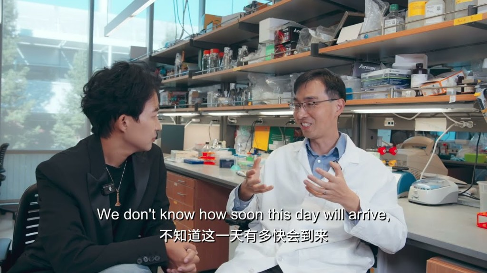
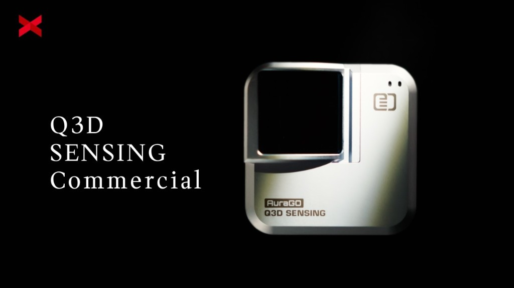
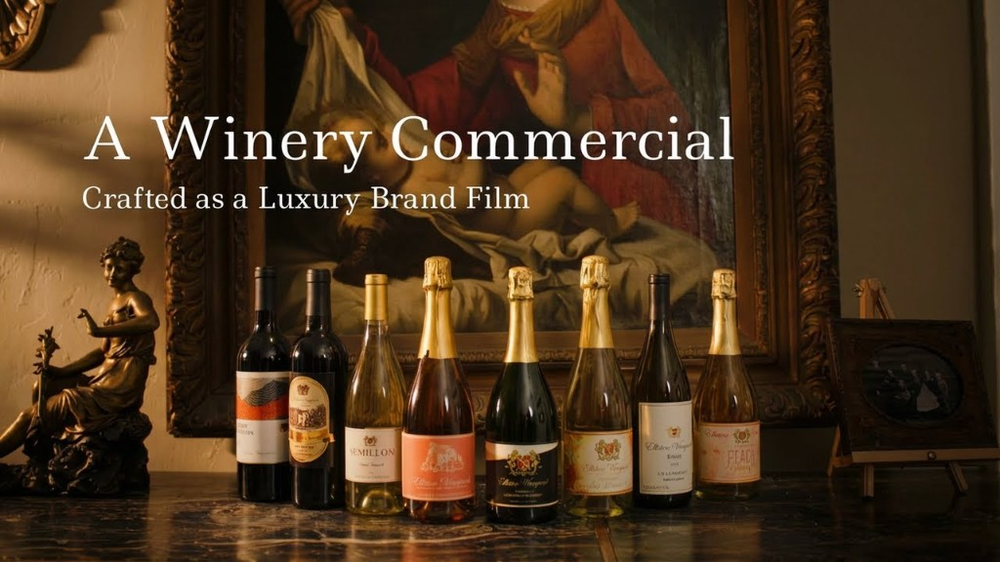

WORK
Our work is not made to be quickly scrolled past. It is made to be remembered, saved, and watched again.
Whether the work is founder storytelling, real estate advertising, reality show integration, real estate services, or a private club, we use a documentary approach to build credible brand narratives.
Every piece we create tells a story about the quality of future living.
We Do Not Create
Disposable
Advertising
Surviving Silicon Valley
This is a reality show that authentically captures the raw, high-stakes world of life, love, startups,
and home-buying — right in the cosmic center of it all: Silicon Valley.
What makes a house a home? — Aloe Blacc
A documentary collaboration with Aloe Blacc. After the wildfires that transformed his hometown,
the film follows his personal journey to rediscover the meaning of home—beyond structure, into
identity and belonging.

Stanford Professor Interview Campaign
In conversation with Lucas, Dr. Cong of Stanford introduces LabOS—an XR-based human-AI system that
brings real-time, data-driven intelligence directly into experimental work.
Real Estate Videos
Property showcases, neighborhood and city narratives, and lifestyle content—produced in show format to
boost watch-through rates and conversion.

Built for the Real World — Q3D Sensing
AuraGo by Q3D Sensing is a portable LiDAR scanner that brings professional-grade 3D capture to
smartphones and tablets, making precise spatial scanning accessible to everyday workflows.

Wine, Time, and Sincerity — Elliston Vineyards
At The Elliston Vineyards, where time moves gently, wine, memory, and human connection unfold
with sincerity rather than speed.